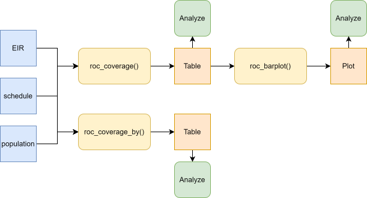
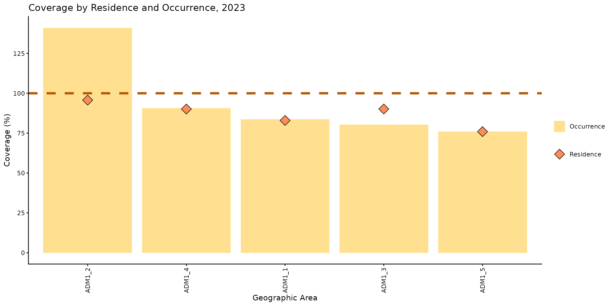
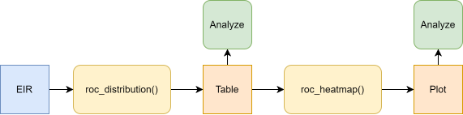
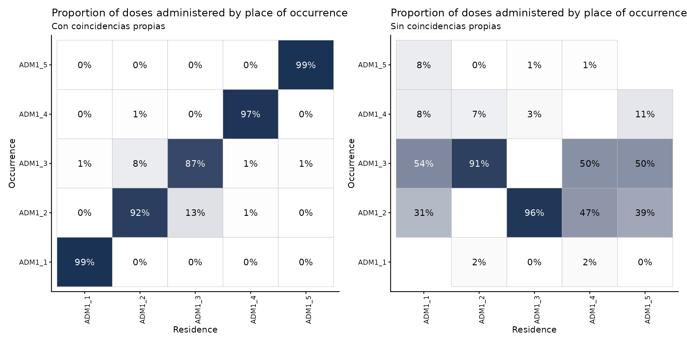
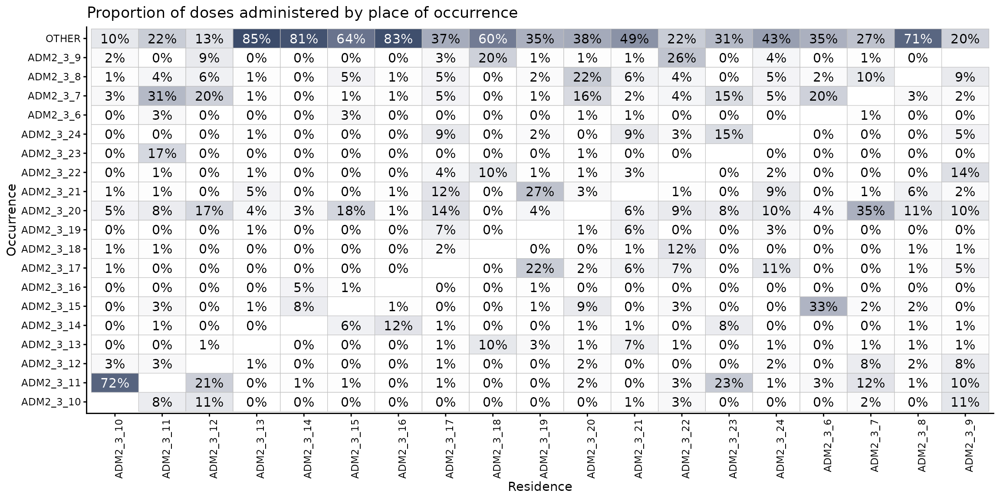

Análisis de residencia vs. lugar de vacunación
OPS/CIM
9 de abril de 2025
Source:vignettes/articles/es/residence_occurrence_es.Rmd
residence_occurrence_es.RmdFundamento
Es común que los Registros Nominales de Vacunación electrónicos (RNVe) incluyan tanto el lugar de residencia como el lugar donde ocurrió la vacunación. La cobertura de vacunación puede estimarse agrupando los eventos por cualquiera de estas dos ubicaciones. Sin embargo, los denominadores generalmente se estiman con base en el lugar de residencia.
Usar el lugar de residencia o el lugar de vacunación como numerador puede llevar a subestimar o sobreestimar la cobertura. En ocasiones, la cobertura puede superar el 100 %, especialmente en áreas donde los servicios de vacunación están más disponibles o reciben personas de otras zonas.
El módulo de residencia y lugar de vacunación de PAHOabc proporciona funciones para explorar y analizar este fenómeno.
Nota
Todas las funciones utilizadas para los análisis de residencia y lugar de vacunación dentro de PAHOabc comienzan con el prefijo
roc_.
Glosario
Divisiones político-geográficas
A lo largo de esta viñeta se hace referencia a distintos niveles de división político-geográfica. Estos niveles son definidos por cada país o territorio y pueden recibir nombres diferentes. PAHOabc no depende de esos nombres locales; por eso, el usuario debe recodificar sus variables para ajustarlas a la estructura que utiliza el paquete.
En concreto, PAHOabc puede distinguir tres niveles administrativos que, listados del nivel superior al inferior, son: ADM0, ADM1 y ADM2.
- ADM0: El país. Este es el nivel administrativo más alto.
- ADM1: La primera subdivisión geográfica del país. ADM0 contiene varias subdivisiones ADM1.
- ADM2: La segunda subdivisión geográfica del país. Cada ADM1 contiene varias subdivisiones ADM2.
Nombres de vacunas
Los conjuntos de datos de ejemplo utilizan una convención específica para nombrar las dosis de vacunas. Es posible que esta convención no coincida con la que usa su país o institución, pero esto no afecta el uso del paquete si los nombres se aplican de manera consistente.
Por ejemplo, los nombres de las vacunas utilizados en el paquete PAHOabc son:
| Abreviatura | Nombre completo |
|---|---|
| SRP1 | Vacuna contra sarampión, rubéola y paperas (1.ª dosis) |
| DTP1 | Vacuna contra difteria, tétanos y tos ferina (1.ª dosis) |
| DTP2 | Vacuna contra difteria, tétanos y tos ferina (2.ª dosis) |
| DTP3 | Vacuna contra difteria, tétanos y tos ferina (3.ª dosis) |
| BCG RN | Vacuna Bacillus Calmette–Guérin (al nacer) |
| YFV1 | Vacuna contra la fiebre amarilla (1.ª dosis) |
Uso
Instalar el paquete
El primer paso para ejecutar los análisis de residencia y lugar de vacunación es instalar el paquete PAHOabc, disponible en GitHub.
devtools::install_github("IM-Data-PAHO/pahoabc")Cargar los datos
Las funciones de este módulo requieren tres conjuntos de datos en un formato específico.
- Su RNVe.
- El esquema de vacunación relacionado con este RNVe.
- Una tabla con denominadores poblacionales según el nivel geográfico de su análisis.
Para facilitar la prueba de PAHOabc y la comprensión de la estructura requerida, a continuación se presentan los conjuntos de datos de ejemplo que utiliza este módulo.
RNVe
El conjunto de datos pahoabc::pahoabc.EIR proporciona un
ejemplo de Registro Nominal de Vacunación electrónico (RNVe). Es una
tabla nominal simulada con eventos individuales de vacunación. Cada fila
corresponde a una vacunación e incluye información sobre la residencia
de la persona, el lugar donde fue vacunada (ocurrencia), su fecha de
nacimiento y la dosis recibida.
pahoabc.EIR %>% head() %>% kable(caption = "Ejemplo de Registro Nominal de Vacunación electrónico")| ID | date_birth | date_vax | ADM1_residence | ADM2_residence | ADM1_occurrence | ADM2_occurrence | dose |
|---|---|---|---|---|---|---|---|
| 191997 | 2023-08-08 | 2023-12-26 | ADM1_4 | ADM2_4_35 | ADM1_4 | ADM2_4_35 | DTP2 |
| 212189 | 2023-12-20 | 2023-12-26 | ADM1_5 | ADM2_5_61 | ADM1_5 | ADM2_5_61 | BCG RN |
| 118063 | 2022-09-15 | 2023-12-26 | ADM1_2 | ADM2_2_5 | ADM1_2 | ADM2_2_5 | DTP1 |
| 118063 | 2022-09-15 | 2023-12-26 | ADM1_2 | ADM2_2_5 | ADM1_2 | ADM2_2_5 | YFV1 |
| 130751 | 2022-10-27 | 2023-12-12 | ADM1_5 | ADM2_5_55 | ADM1_5 | ADM2_5_55 | YFV1 |
| 136532 | 2021-09-21 | 2023-12-26 | ADM1_3 | ADM2_3_12 | ADM1_3 | ADM2_3_12 | SRP1 |
-
ID: Número único de identificación de la persona. - Fecha de nacimiento (
date_birth): Fecha de nacimiento de la persona. - Fecha de vacunación (
date_vax): Fecha del evento de vacunación. - ADM1: Primer nivel administrativo geográfico del país.
- ADM2: Segundo nivel administrativo geográfico del país.
- Lugar de residencia (
Residence): Lugar donde vive la persona. - Lugar de vacunación (
Occurrence): Lugar donde ocurrió la vacunación. - Dosis (
dose): Variable combinada que representa el tipo de vacuna y su número de dosis correspondiente. Por ejemplo, DTP1 se refiere a la primera dosis de una vacuna que contiene componentes de difteria, tétanos y tos ferina.
Esquema de vacunación
El conjunto de datos pahoabc::pahoabc.schedule define el
esquema nacional de vacunación, con cada dosis y su edad recomendada de
administración (en días). Esta tabla permite determinar si una persona
tiene las vacunas que le corresponden según el esquema.
pahoabc.schedule %>% kable(caption = "Ejemplo de esquema de vacunación")| dose | age_schedule | age_schedule_low | age_schedule_high |
|---|---|---|---|
| SRP1 | 365 | 360 | 420 |
| DTP1 | 60 | 54 | 90 |
| DTP2 | 120 | 116 | 150 |
| DTP3 | 180 | 176 | 210 |
| BCG RN | 0 | 0 | 28 |
| YFV1 | 365 | 360 | 420 |
- Dosis (
dose): Variable combinada que representa el tipo de vacuna y su número de dosis correspondiente. Por ejemplo, DTP1 se refiere a la primera dosis de una vacuna que contiene componentes de difteria, tétanos y tos ferina. - Edad programada (
age_schedule): Edad recomendada de administración de la dosis, en días. - Límite inferior de edad (
age_schedule_low): Límite inferior de la edad objetivo, en días. - Límite superior de edad (
age_schedule_high): Límite superior de la edad objetivo, en días.
Nota
Los nombres de las dosis en la columna
dosedeben coincidir exactamente con los del conjunto de datospahoabc.EIR.
Denominadores poblacionales
Este módulo requiere una tabla con denominadores poblacionales. El nivel geográfico de esta tabla debe coincidir con el nivel geográfico del análisis. Por ejemplo, para un análisis a nivel ADM1, la tabla de denominadores poblacionales debe tener la siguiente estructura.
pahoabc.pop.ADM1 %>% head() %>% kable(caption = "Ejemplo de población a nivel ADM1")| ADM1 | year | age | population |
|---|---|---|---|
| ADM1_1 | 2022 | 0 | 1718.189 |
| ADM1_1 | 2022 | 1 | 1808.964 |
| ADM1_1 | 2023 | 0 | 1703.145 |
| ADM1_1 | 2023 | 1 | 1792.443 |
| ADM1_2 | 2022 | 0 | 6575.261 |
| ADM1_2 | 2022 | 1 | 6922.644 |
Esta tabla está en formato largo y contiene la población
(population) de niños de una edad (age)
específica durante un año (year) determinado para un nivel
ADM1.
Nota
Si su análisis es a un nivel político-geográfico diferente, consulte
pahoabc::pahoabc.pop.ADM0ypahoabc::pahoabc.pop.ADM2para conocer el formato y las columnas requeridas.
Análisis de cobertura
La primera parte de este módulo permite analizar la cobertura tanto por lugar de residencia como por lugar de vacunación (ocurrencia).
Flujo de trabajo esperado
Las funciones roc_coverage() y
roc_barplot() trabajan en conjunto para analizar y
visualizar la cobertura. La función roc_coverage() calcula
la cobertura de vacunación por residencia y por lugar de vacunación,
según los niveles administrativos, años y vacunas seleccionados. Su
resultado es una tabla compatible con roc_barplot(), que
genera una visualización para un año y una vacuna específicos.
La función roc_coverage_by() está disponible cuando se
desea calcular la cobertura solo por residencia o solo por lugar de
vacunación. Aunque produce una tabla similar, su resultado no es
compatible con roc_barplot().

Ejemplo
A continuación se muestra un caso de uso sencillo de
roc_coverage(), en el que se calcula la cobertura por ambas
métricas para la vacuna DTP1 en 2023 usando los datos de ejemplo.
# calcular la cobertura
coverage_df <- roc_coverage(
data.EIR = pahoabc.EIR,
data.schedule = pahoabc.schedule,
data.pop = pahoabc.pop.ADM1,
geo_level = "ADM1",
years = 2023, # esto puede ser un vector de años
vaccines = "DTP1" # esto puede ser un vector de vacunas
)
# mostrar los resultados en una tabla
coverage_df %>%
kable(digits = 3, caption = "Cobertura de vacunación a nivel ADM1")| dose | year | age | ADM1 | doses_applied | population | coverage | coverage_type |
|---|---|---|---|---|---|---|---|
| DTP1 | 2023 | 0 | ADM1_1 | 1413 | 1703.145 | 82.964 | residence |
| DTP1 | 2023 | 0 | ADM1_2 | 6238 | 6517.689 | 95.709 | residence |
| DTP1 | 2023 | 0 | ADM1_3 | 27492 | 30497.127 | 90.146 | residence |
| DTP1 | 2023 | 0 | ADM1_4 | 3678 | 4081.329 | 90.118 | residence |
| DTP1 | 2023 | 0 | ADM1_5 | 2010 | 2645.993 | 75.964 | residence |
| DTP1 | 2023 | 0 | ADM1_1 | 1425 | 1703.145 | 83.669 | occurrence |
| DTP1 | 2023 | 0 | ADM1_2 | 9194 | 6517.689 | 141.062 | occurrence |
| DTP1 | 2023 | 0 | ADM1_3 | 24494 | 30497.127 | 80.316 | occurrence |
| DTP1 | 2023 | 0 | ADM1_4 | 3705 | 4081.329 | 90.779 | occurrence |
| DTP1 | 2023 | 0 | ADM1_5 | 2013 | 2645.993 | 76.077 | occurrence |
Esta salida puede pasarse directamente a la función
roc_barplot() como se muestra a continuación.
# visualizar el resultado de roc_coverage()
coverage_plot <- roc_barplot(
data = coverage_df,
year = 2023,
vaccine = "DTP1"
)
# mostrar
coverage_plot
Este gráfico muestra la cobertura de vacunación alcanzada por cada nivel administrativo subnacional, considerando tanto el lugar de vacunación como el lugar de residencia. Las barras amarillas representan la cobertura por lugar de vacunación; es decir, el numerador incluye todas las dosis administradas en esa ubicación. Los diamantes naranjas representan la cobertura por lugar de residencia; es decir, el numerador incluye a las personas que viven en esa ubicación, independientemente del lugar donde recibieron la vacuna.
La cobertura por residencia y lugar de vacunación es similar en ADM1_1, ADM1_4 y ADM1_5. Sin embargo, en ADM1_2 y ADM1_3 se observan diferencias entre los dos tipos de cobertura.
En ADM1_2, la cobertura por lugar de vacunación alcanza el 141 %, mientras que la cobertura por residencia es del 95 %, con una diferencia de 46 puntos porcentuales. En ADM1_3, la cobertura por lugar de vacunación es del 80 %, mientras que la cobertura por residencia es del 90 %, con una diferencia de 10 puntos porcentuales a favor de la cobertura por residencia.
Estos patrones sugieren flujos poblacionales importantes entre áreas administrativas. En ADM1_2, la cobertura alta por lugar de vacunación y la cobertura menor por residencia indican que muchas personas vacunadas en esta área viven en otro lugar. En cambio, ADM1_3 muestra una cobertura por residencia mayor que por lugar de vacunación, lo que sugiere que una parte de sus residentes se desplaza a otras áreas para vacunarse.
Análisis de distribución de dosis
Las funciones de distribución ayudan a analizar dónde se vacunan las personas según su lugar de residencia.
Flujo de trabajo esperado
Las funciones roc_distribution() y
roc_heatmap() permiten analizar los flujos poblacionales
entre áreas administrativas. Por ejemplo, se puede observar dónde se
vacunan las personas que viven en una región: si se vacunan dentro de su
propia región o si se desplazan a otras.
La figura a continuación muestra el flujo de trabajo esperado para estas funciones.

Ejemplo a nivel del primer nivel administrativo
Este análisis solo requiere el RNVe y algunos parámetros sencillos. Por ejemplo, se puede calcular cómo se distribuye la vacunación en el primer nivel administrativo para la vacuna DTP1 en 2023.
# calcular la distribución de dosis para cada lugar de residencia
distribution_df <- roc_distribution(
data.EIR = pahoabc.EIR,
vaccine = "DTP1",
geo_level = "ADM1",
birth_cohort = 2023,
include_self_matches = TRUE
)
# mostrar los resultados en una tabla (ver solo un par de regiones por simplicidad)
distribution_df %>%
filter(ADM1_residence %in% c("ADM1_1", "ADM1_3")) %>%
kable(digits = 3, caption = "Distribución de vacunación para cada lugar de residencia por lugar de vacunación")| ADM1_residence | ADM1_occurrence | frequency | proportion |
|---|---|---|---|
| ADM1_1 | ADM1_3 | 7 | 0.006 |
| ADM1_1 | ADM1_2 | 4 | 0.004 |
| ADM1_1 | ADM1_4 | 1 | 0.001 |
| ADM1_1 | ADM1_5 | 1 | 0.001 |
| ADM1_1 | ADM1_1 | 1084 | 0.988 |
| ADM1_3 | ADM1_3 | 18443 | 0.868 |
| ADM1_3 | ADM1_2 | 2685 | 0.126 |
| ADM1_3 | ADM1_4 | 88 | 0.004 |
| ADM1_3 | ADM1_5 | 17 | 0.001 |
| ADM1_3 | ADM1_1 | 12 | 0.001 |
Por ejemplo, el 87 % de las personas que viven en ADM1_3 también se
vacunó allí contra DTP1. Otro 13 % recibió su vacuna DTP1 en otro lugar,
específicamente en ADM1_2. Para analizar solo a las personas que se
vacunaron fuera de su lugar de residencia, use el parámetro
include_self_matches = FALSE.
# calcular la distribución de dosis para cada lugar de residencia
distribution_df2 <- roc_distribution(
data.EIR = pahoabc.EIR,
vaccine = "DTP1",
geo_level = "ADM1",
birth_cohort = 2023,
# establecer en FALSE para excluir los casos en que las personas se vacunan en su lugar de residencia
include_self_matches = FALSE
)
# mostrar los resultados en una tabla (centrarse solo en ADM1_3 para este ejemplo)
distribution_df2 %>%
filter(ADM1_residence == "ADM1_3") %>%
kable(digits = 3, caption = "¿Dónde se vacunan los residentes de ADM1_3?")| ADM1_residence | ADM1_occurrence | frequency | proportion |
|---|---|---|---|
| ADM1_3 | ADM1_2 | 2685 | 0.958 |
| ADM1_3 | ADM1_4 | 88 | 0.031 |
| ADM1_3 | ADM1_5 | 17 | 0.006 |
| ADM1_3 | ADM1_1 | 12 | 0.004 |
Esto muestra que el 96 % de las personas de ADM1_3 que no se vacunan en su lugar de residencia lo hacen en ADM1_2.
La función roc_heatmap() muestra este patrón con mayor
claridad.
library(patchwork) # para mostrar los gráficos lado a lado
# generar los gráficos
distribution_plot <- roc_heatmap(distribution_df) # con coincidencias propias
distribution_plot2 <- roc_heatmap(distribution_df2) # sin coincidencias propias
# agregar subtítulo
distribution_plot <- distribution_plot + labs(subtitle = "Con coincidencias propias")
distribution_plot2 <- distribution_plot2 + labs(subtitle = "Sin coincidencias propias")
# mostrar los gráficos lado a lado
distribution_plot + distribution_plot2
Nota
El gráfico de la derecha muestra la proporción de dosis administradas en un lugar diferente a su lugar de residencia. Por eso la diagonal está vacía.
Estos gráficos pueden leerse de forma vertical u horizontal. Al leer el gráfico verticalmente, las columnas suman 100 % (salvo diferencias por redondeo). Cada columna representa la población de un área, por ejemplo ADM1_1, y muestra dónde se vacuna. En el gráfico de la derecha, del total de personas que viven en ADM1_1 y se vacunan fuera de su lugar de residencia, el 54 % lo hace en ADM1_3, el 31 % en ADM1_2 y el 16 % restante en ADM1_4 y ADM1_5.
Al leer el gráfico horizontalmente, las filas no suman 100 %, pero indican de dónde provienen las personas que se vacunan en una región. Por ejemplo, en el gráfico de la izquierda se observa que el 92 % de los residentes de ADM1_2 se vacuna también allí, pero esta región también vacuna a una proporción importante de residentes de ADM1_3 (13 %).
Ejemplo a nivel del segundo nivel administrativo
En este caso, puede ser útil realizar el análisis a un nivel más detallado. A continuación se repite el proceso en el segundo nivel administrativo, por ejemplo, distritos dentro de una región.
# calcular la distribución de dosis para cada lugar de residencia al segundo
# nivel administrativo (centrarse solo en ADM1_3 para este ejemplo)
distribution_df3 <- roc_distribution(
data.EIR = pahoabc.EIR,
vaccine = "DTP1",
geo_level = "ADM2",
birth_cohort = 2023,
include_self_matches = FALSE,
within_ADM1 = "ADM1_3" # establecer la región que se quiere analizar
)
# mostrar los resultados en un gráfico
distribution_plot3 <- roc_heatmap(
distribution_df3
)
# mostrar
distribution_plot3
En este mapa de calor se observa la proporción de eventos de vacunación que ocurren en un lugar diferente al lugar de residencia, desagregada por el segundo nivel administrativo.
Por ejemplo, entre las personas que viven en ADM2_3_10 y se vacunan fuera de su área de residencia, el 72 % recibe la vacuna en ADM2_3_11. De manera similar, el 23 % de las personas de ADM2_3_23 que se vacunan en otro lugar lo hacen en ADM2_3_11.
Al leer el mapa de calor horizontalmente, se observa que ADM2_3_20 vacuna a muchas personas provenientes de otras áreas: el 35 % de las de ADM2_3_7, el 18 % de ADM2_3_15, el 17 % de ADM2_3_12, el 14 % de ADM2_3_17, etc.
La fila superior indica a las personas que se vacunan fuera de ADM1_3. Por ejemplo, en la columna 4, el 85 % de los residentes de ADM2_3_13 se vacuna fuera de ADM1_3, lo que sugiere un flujo poblacional importante.
Resumen
Esta viñeta mostró cómo usar PAHOabc para comparar la cobertura de vacunación por lugar de residencia y por lugar de vacunación, y para explorar cómo se desplazan las personas entre áreas para vacunarse.
La cobertura puede variar mucho según la ubicación que se use para el cálculo. En algunos casos, la cobertura por lugar de vacunación puede superar el 100 %, lo que puede indicar que personas de otras áreas acuden a vacunarse allí. Las funciones de distribución y mapa de calor ayudan a visualizar estos patrones y pueden mostrar qué áreas funcionan como centros de servicio o hacia dónde se desplazan las personas para vacunarse.
En general, este tipo de análisis ayuda a comprender los flujos poblacionales y apoya una mejor planificación de los programas de inmunización.